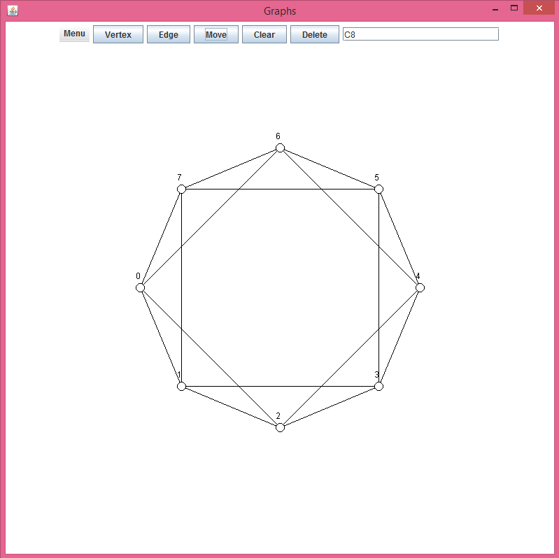
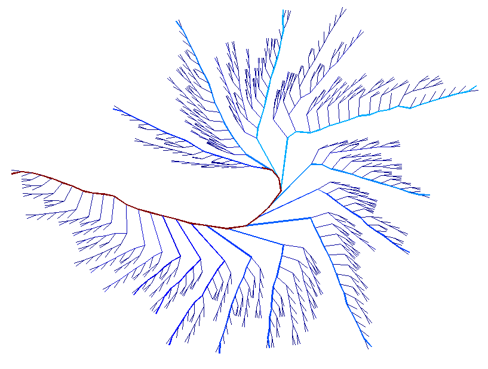
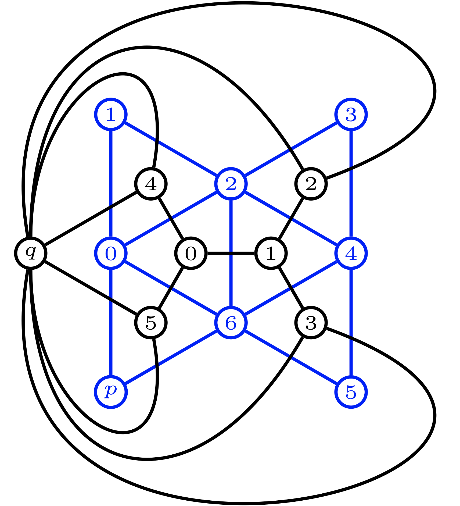
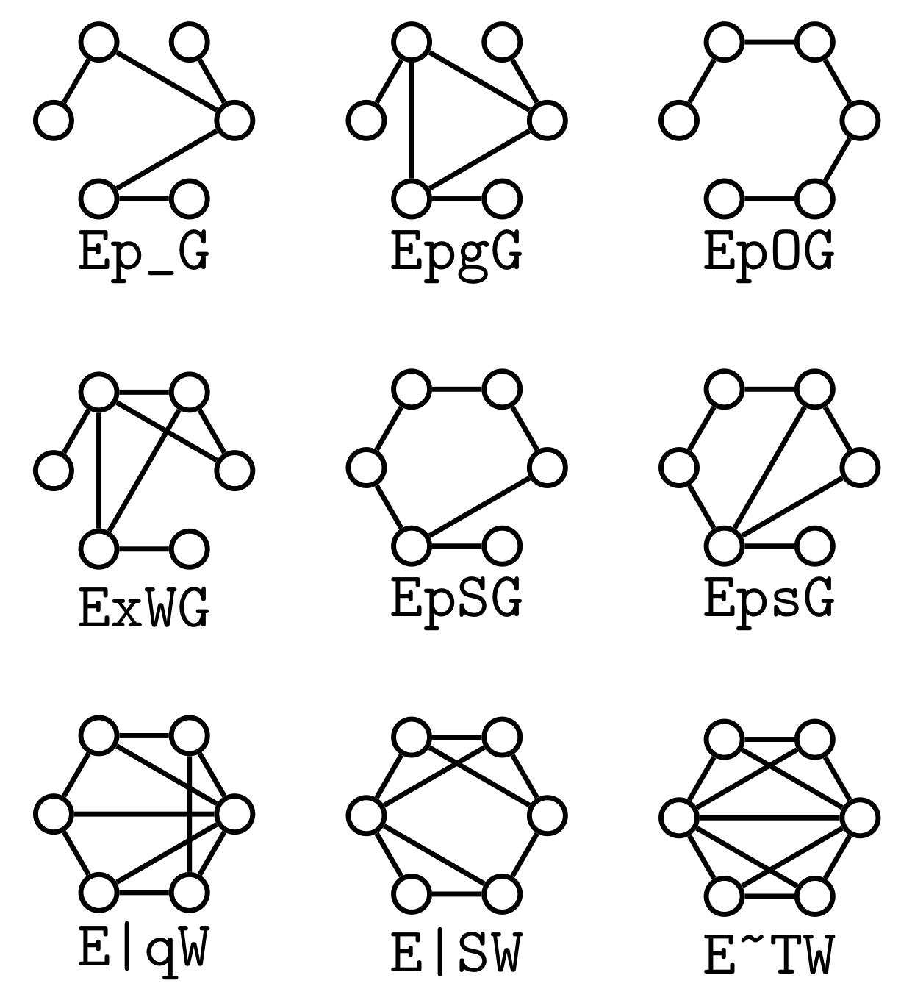
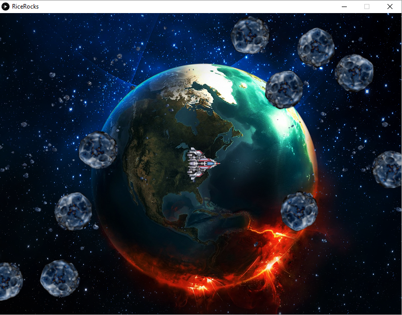
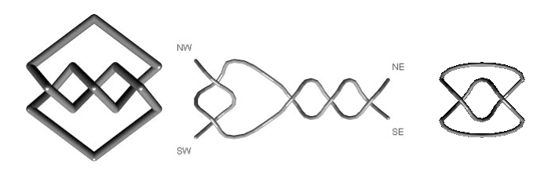
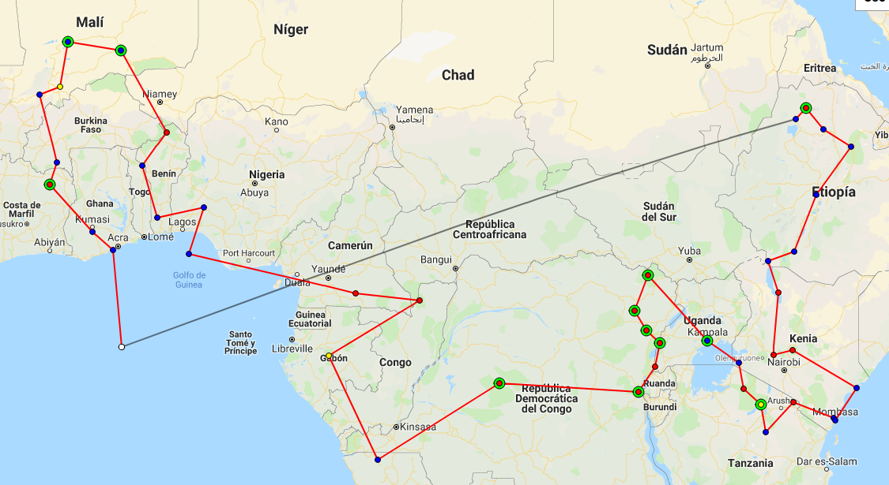
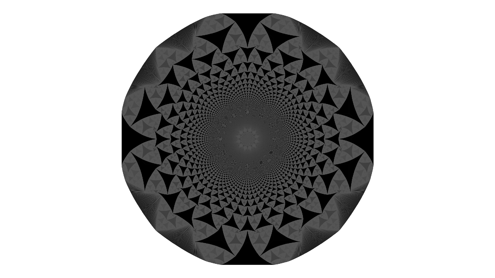

|
Carlos A. Alfaro |

|
|
|
Carlos A. Alfaro |
|
"I think that you appreciate that there are extraordinary men and women and extraordinary moments when history leaps forward on the backs of these individuals, that what can be imagined can be achieved, that you must dare to dream, but that there's no substitute for perseverance and hard work and teamwork because no one gets there alone; and that, while we commemorate the... the greatness of these events and the individuals who achieve them, we cannot forget the sacrifice of those who make these achievements and leaps possible."
Dana Scully to Fox Mulder
I like to code in different languajes. Here, there are some of them. Click on the title of the project to go to its GitHub site.
A code in Java that serves as a graphical interface for computing the critical group and the critical ideals of a digraph. It requires Sage and Emacs. But if wanted, the code can be modified to use an alternative Computer Algebra System (a previous version used Mathematica and Macaulay2) or Text Editor. This also can be used to export in Tikz format the rectilinear drawing of the graph.
A Python code to compute the principal components in the tree space. It will be an updated version of the code designed for the paper Dimension Reduction in Principal Component Analysis for Trees.
A MIP formulation to compute the recurrent configurations. It is coded on sage
GraphToTikz is a simple sage function to generate simple Tikz-LaTeX code of a graph
CSandPile is a tool developed in C++ for computing the group operations of the recurrent representatives of non-negative configurations of a graph. It helps to understand the combinatorial structure of the group operations of the recurrent configurations that generate the sandpile group of a graph.
Click here to play with it (It doesn't work on Internet Explorer) Just push play. Enjoy and modify! I coded a version for Android watch it here.
This is a Java applet, which draws 3D tangles. There are implemmented some operations like sum and closure. It was coded in Java3D, so you need to install it to run it.
Imagine you are a travel fanatic and have just managed to find three spare weeks for a holiday in your busy life! You decide to take this opportunity to fulfill a lifelong dream: visiting the most amazing places in the world. This code help you to plan a travel itinerary on Google Maps.
There are many different sandpile models, here we draw few of them.
A minimal example using glpk.js
Code to draw Voronoi diagrams on Google Maps